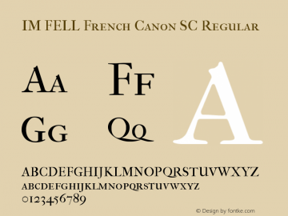

Colores
Tipografías
Freight Book
Freight es una tipografía simple serifa diseñada por Joshua Darden. Dentro de la infografía es usada principalmente para textos.

IM Fell French Canon
IM Fell French Canon es una tipografía con serifa diseñada por Igino Marini. Dentro de la infografía es usada para títulos y sub-títulos.